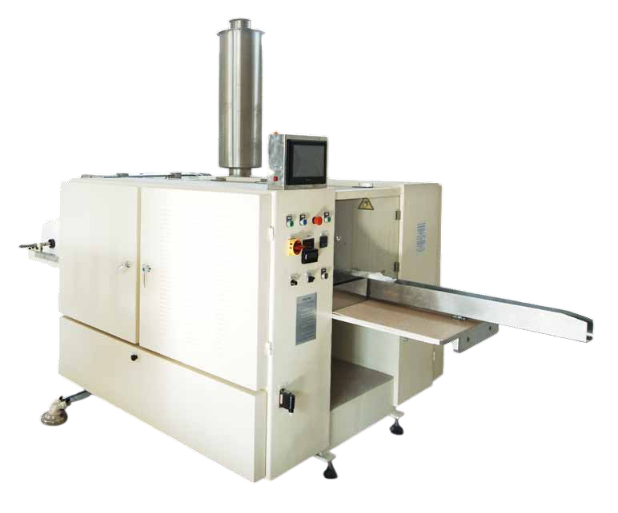

MEDMAK LXZ-50 / LXZ-75 / LXZ-100 single swab transfer unit; swab katlama makinesinden çıkan tekli swabların uyarlanmış paketleme makinesine kontrollü beslenmesini sağlayan yardımcı ünitedir. PLC kontrollü, vakum destekli ve tam otomatik çalışma prensibine sahiptir.

Swab katlama makinesi ile paketleme makinesi arasında köprü görevi gören transfer ünitesi; tekli swabları vakum destekli sistemle alır, seçilebilir adetlerde gruplandırır ve paketleme makinesine kontrollü olarak besler.
| Özellik | Değer |
|---|---|
| Model Ailesi | LXZ-50 / LXZ-75 / LXZ-100 |
| Fonksiyon | Single Swab Transfer Unit |
| Swab Kapasitesi | 1 – 5 swab/paket (seçilebilir) |
| Transfer Yöntemi | Vakum destekli kontrollü besleme |
| Kontrol Sistemi | PLC kontrollü tam otomatik |
| Entegrasyon | Swab katlama → Transfer → Paketleme hattı |
| Uyumluluk | ISO 13485 üretim standartları |
| Kullanım Alanı | Medikal swab üretim hatları |
Standart kapasiteli giriş seviyesi model. Düşük-orta hacimli üretim hatları için optimize edilmiştir. Kompakt tasarım ve kolay entegrasyon.
Orta kapasiteli endüstriyel model. Dengeli hız ve kapasite sunar. Çoğu standart üretim hattı için ideal çözümdür.
Yüksek kapasiteli amiral gemisi model. Maksimum üretim hızı ve verimlilik için tasarlanmıştır. Büyük ölçekli üretim tesisleri için uygundur.